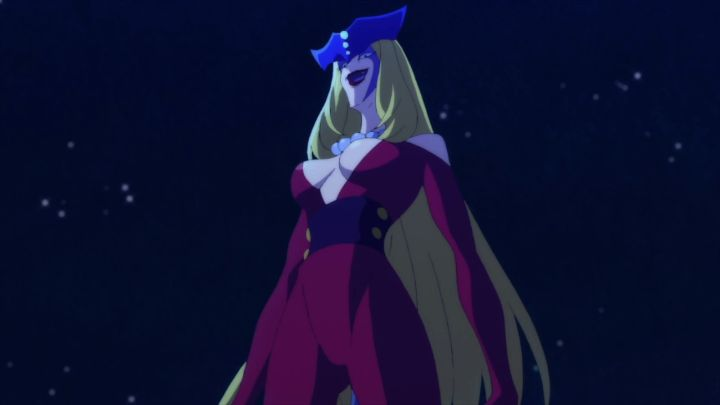

Go Nagai is a popular writer in Japan, coming up with many classic manga characters that have been used in both family-friendly television and raunchy, violent adult anime. Around 2018, his 50th professional anniversary was celebrated with rebooted anime. "Devilman Crybaby" was the first project, and turned out to be a great success on Netflix, able to go full out in its violent monsters and themes of horrors, sex, and the depravity of humanity. That success was probably encouraging for "Cutie Honey Universe," a reboot on Cutie Honey, one of Nagai's other franchises. "Universe" (whose name shortens to "CHU," a common Japanese onomatopoeia for a cute kiss) has a different director however, and was broadcast on television, so it couldn't go all out in terms of mature content. Being vaguely familiar with the character, it also made sense on paper that Cutie Honey should be more fun, and not quite as serious as "Crybaby" was. While there are still some things to talk about, the result is a bit lacking in motivation.That's not to say that "Universe" doesn't push the envelope. The first episode opens with naked girls kissing each other, and later scenes include bondage and fondling of girls, including Honey, on their boobs, butt and crotch. Despite the fanservice, there's relatively little nudity, beyong a tease of Honey's nipples during a classic magical-girl transformation sequence. The sexual content is also almost always meant as humor, almost enough to qualify it as appropriate for younger audiences by accident. It's a conflict of interest, and I don't think the show would be enough for viewers who, at this point, are used to anime with a higher ratio of sexy content.Anyway, the story in this version of Cutie Honey: Honey is a humanoid android, living a safe life at an all-girls' boarding school, but working part-time as a police detective. Her robot body allows her to transform seemlessly from a cute blonde to a ravishing redhead, as well as a few other disguises. Not to mention her seemingly magic-ability to control gadgets, her motorcycle, and her ability to fight in a alternate dimension against monsters when they appear. And monsters do appear: under the gang known as Panther Claw, there are several animal-hybrid monsters, turned from once-innocent women. Thus Honey and the Panther Claw Criminal Investigation Service (yes, a confusing name that makes it difficult to know whose side one is on) have to stop the bad guys in every episode. Think "super hero," a la "Sailor Moon" or "Power Rangers."The actual story within this one season of episodes involves Sister Jill, the leader of Panther Claw, and her scheme to steal a special scientific device built into Honey's body (although even Honey herself doesn't know exactly where or how the device in encorporated into her). Since simply destroying Honey would also destroy the device, she decides to infiltrate the PCIS as an elite detective on their side, working with Honey to... defeat her own minions... until she finds an opportunity while close to Honey to get the device. Honey herself is utterly naive and trusting, a frustrating character trait, even if she's basically invincible with a wink and a smile. Honey herself is a one-dimensional character, not unlike her early appearances in the 70's as a super hero. It's disappointing that little effort has been made to rebuild her for a new generation. Even so, she remains a charming lead character, and it's exciting to see her prepared smile just before she beats up enemies (her fights are more engaging then her espionage work in different costumes). Jill has an opportunity to be much more interesting, but her plan to throw her minions under the bus while figuring out what the ending move would be is just too stupid. She's a menace without direction. There's plenty of side characters, including comic-relief from Honey's school, and old franchise characters like the old midget Danbei and the young intrepid Junpei. Most of the characters are women, with an initial attraction to girl-on-girl love and fighting. The few men in the series have nothing to do. Danbei and Junpei in particular seem to just be perverted boys that tease Honey, with some scenes that I was surprised got past the censors. The other side characters are fine, but not as funny as they think they are.In fact, the character designs are absolutely bizarre for most of those characters, paying homage to the original series and the tendancy for weird designs for distinction and comic effect. Maybe it worked in 1978, but not in 2018 (although the same design tactics are still used successfully in shonen adaptations to my chagrin). The animation is also pretty static, using animation shortcuts and mistakes that, again, feel nostalgic to the 70's, but are just poor quality today, with the exception being during the action scenes (motorcycle scenes in particular look good).I was quick to assume I knew what type of show "Universe" was, that being a light-hearted action-comedy. However, things take a dramatic and dark turn in episode 6, when the antagonists grow impatient and kill a large swath of people, including close friends. And it repeats. For the sake of being evil, the plan switches to making Honey suffer until her heart grows cold. I wonder if this sudden change came from the praise "Devilman Crybaby" got, and in hindsight I should have predicted it here. It's not a terrible idea: it could allow much needed depth and juice to both the hero and the villian. And it does. And it allows for a pretty spectacular final episode and ending. ... but it also doesn't feel right. I don't know enough of Go Nagai's work, but while I could (reluctantly) accept such dark themes in "Devilman," I have trouble accepting them in "Cutie Honey." Even when the themes on humanity in general are opposites between these shows ("humans are evil" vs "humands are love"), the darker tragedies don't work for "Universe." ESPECIALLY when it continues to push the comedy and fanservice parts after death and despair. The show is tone-deaf. Are there any qualities in "Cutie Honey Universe" worth praising? Sure. I mentioned that Honey is a charming hero, and that Jill makes an intriguing villain despite the holes in her plan. The bigger standout are the episodic monsters Honey has to fight, one of the most consistent strengths Go Nagai had. Their vicious attitude and scary designs make them a genuine horror, and seeing how many innocent people died in "Crybaby," I fully expected these monsters to be as dangerous as they looked. Also, the music in "Universe" is pretty great, the one "homage" to the cool and jazzy magical super hero genre of old anime that actually holds up well here. I want to dismiss "Cutie Honey Universe" as being forgettable. But this doesn't seem appropriate at all: the character designs and personalities are so bizarre, and the shifts in tone so great, that this couldn't be forgettable. And yet, the quality of the production is lacking across the board, such that it made little impression on me. It's a shame, since there were moments of brightness in "Universe," but they just didn't work together, and the poor direction made everything worse.
- "Ani" More reviews can be found at : https://2danicritic.github.io/ Previous review: review_Cryptozoo Next review: review_D-Frag!